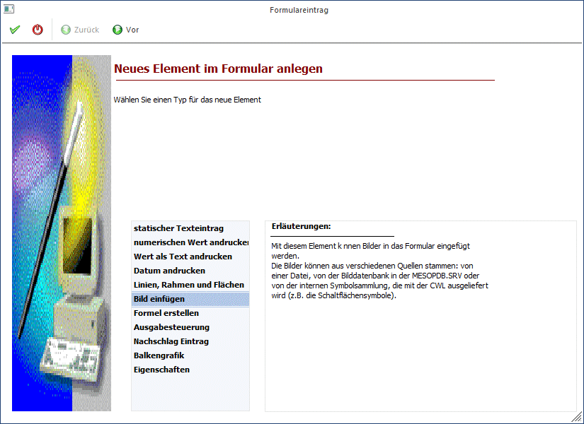
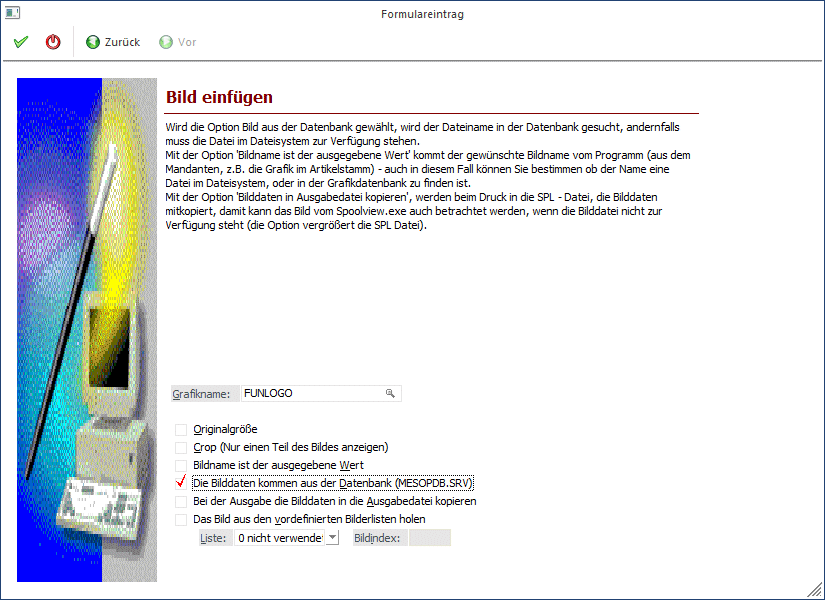
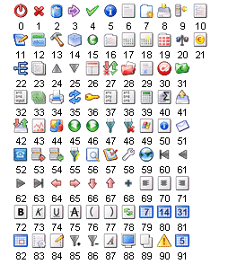
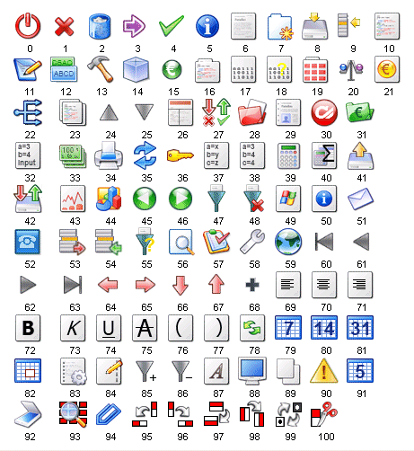
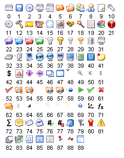
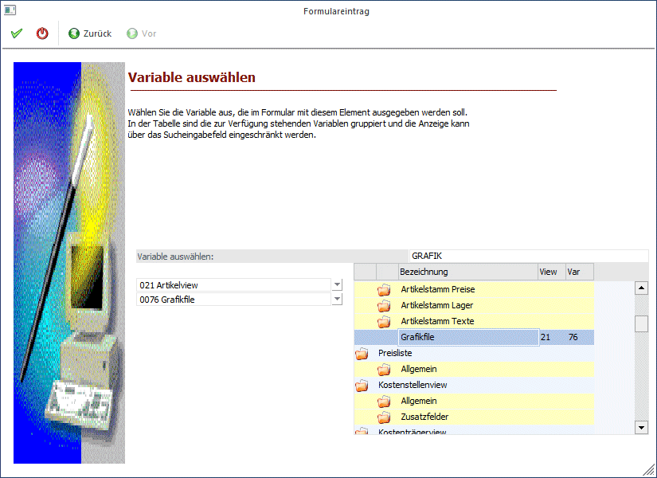

Mit dieser Option können Grafiken angedruckt werden, wobei folgende Formate unterstützt werden:
ü Windows Bitmap (BMP, DIB)
ü Windows Meta File (WMF, EMF)
ü Graphics Interchange Forma (GIF)
ü Tagged Image File Format (TIF)
ü Truevision Targa (TGA)
ü JPEG File Format (JPG)
ü Zsoft Paintbrush (PCX)
ü Portable Network Graphic (PNG)
Schritt 1
Bei der Auswahl des neuen Elements wird die Option "Bild einfügen" ausgewählt.

Durch Anklicken des VOR-Buttons gelangt man in das nächste Fenster, wo einige Einstellungen vorgenommen werden können:
Schritt 2

Ø Grafikname:
In diesem Feld kann hinterlegt werden, welche Grafik gedruckt werden soll, wobei es hier 2 Möglichkeiten gibt:
ü Es kann eine Datei von einem (Netz-)Laufwerk hinterlegt werden. Durch Drücken der F9-Taste kann nach allen Grafiken gesucht werden, die zur Verfügung stehen.
ü Wenn die Option "Die Bilddaten kommen aus der Datenbank (MESOCMP.SRV)" aktiviert ist, dann wird das Fenster "Bilder in Datenbank" geöffnet, wo dann alle Grafiken angezeigt werden, die in der WinLine verwaltet werden. Wie Grafiken in der WinLine verwaltet werden, entnehmen Sie bitte dem WinLine START-Handbuch, Kapitel Grafiken importieren.
Ø Originalgröße
Falls die Grafik in ihrer Originalgröße eingefügt werden soll, muss diese Option aktiviert werden. Zur nachträglichen Bearbeitung (Verkleinern oder Vergrößern) kann die Grafik markiert werden und anschließend auf die gewünschte Größe gezogen werden. Dazu hat die markierte Grafik einen Rahmen mit Eckpunkten, die bei gedrückter Maustaste ein Ziehen der Grafik ermöglichen.
Ø Crop (nur einen Teil des Bildes anzeigen)
Mit dieser Option wird eine Grafik in Originalgröße angezeigt, allerdings wird nur der Bereich angezeigt, der in den definierten Rahmen passt.
Ø Bildname ist der ausgegebene Wert
Diese Option erlaubt den Einbau variabler Grafiken. D.h. es wird nur die Variable angegeben, in der der Name der Grafik enthalten ist (z.B. Grafikdatei aus dem Artikelstamm oder Grafikdatei aus dem Mandantenstamm). Abhängig vom verwendeten Datensatz wird dann immer die dazugehörige Grafik geladen.
Wird diese Option aktiviert, dann kann durch Anklicken des VOR-Buttons die Variable ausgewählt werden, aus der der Name der Grafik geholt werden soll.
Ø Die Bilddaten kommen aus der Datenbank (MESOCMP.SRV)
In der WinLine können auch Grafiken verwaltet werden, die dann zentral abgespeichert werden. Das hat den Vorteil, dass dafür kein extra Aufwand betrieben werden muss (z.B. eigenes Verzeichnis dafür freigeben, auf das dann alle Benutzer zugreifen können oder dergleichen).
Ø Bei der Ausgabe die Bilddaten in die Ausgabedatei kopieren
Wenn die Ausgabe in den Spooler gemacht wird, dann wird die Grafik selbst in die Spooldatei mit übergeben. D.h. die Grafik ist nicht abhängig von einer Datenbank oder einem Verzeichnis, sondern ist fix im Dokument enthalten (sinnvoll bei Mailversand z.B. einer Rechnung mit Firmenlogo etc.)
Ø Das Bild aus den vordefinierten Bilderleisten holen
In der WinLine werden standardmäßig 3 Bilderleisten mit verschiedenen Symbolen zur Verfügung gestellt. Ist die Option aktiv, kann zuerst die Leistennummer (0 bis 2) und dann die gewünschte Grafik gewählt werden.
Nachfolgend finden Sie eine Aufstellung der zur Verfügung stehenden Grafiken.
ü Bildliste 0: nicht verwendet
ü Bildliste 1:

ü Bildliste 2:

ü Bildliste 3:

Durch Anklicken des ZURÜCK-Buttons kann nochmals der Typ verändert werden. Durch Drücken der F5-Taste wird der Eintrag in das Formular übernommen. Durch Drücken der ESC-Taste wird das Fenster geschlossen.
Schritt 3

Im Schritt 3, der nur dann verfügbar ist, wenn die Option "Bildname ist der ausgegebene Wert" aktiviert wurde, kann definiert werden, aus welchem Feld der Datenbank die Information für den Andruck der Grafik geholt werden soll.
Aus der ersten Auswahllistbox kann der Datenbereich ausgewählt werden, wobei für jeden Ausdruck immer nur bestimmte Datenbereiche vorgesehen sind (in einem Kontoblatt kann z.B. nicht auf Artikelstammdaten zugegriffen werden).
Aus der zweiten Listbox muss dann die Variable selbst ausgesucht werden, die angedruckt werden soll. Im rechten Bereich des Fensters kann auch nach bestimmten Variablen gesucht werden. Wenn im Feld Suchbegriff ein Wert eingetragen und durch Drücken der TAB-Taste bestätigt wird, werden alle verfügbaren Variablen angezeigt, die den Suchbegriff irgendwo enthalten. Durch einen Doppelklick aus dem Suchergebnis kann die Variable übernommen werden.
Durch Anklicken des ZURÜCK-Buttons können nochmals die Einstellungen für die Grafik verändert werden. Durch Drücken der F5-Taste wird der Eintrag in das Formular übernommen. Durch Drücken der ESC-Taste wird das Fenster geschlossen.